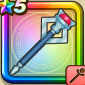

マジカルブースター
攻略班 7.0点 / ベギラマヒャダルコメラゾーマベタン
くわしい特徴
【レベル別習得スキル】 Lv1【賢者】さいだいMP+5 Lv1ベギラマ（消費MP：14）はげしい炎で敵全体にギラ属性の呪文小ダメージを与える Lv10ヒャダルコ（消費MP：15）氷の刃で敵全体にヒャド属性の呪文小ダメージを与える Lv15じゅもんダメージ+5% Lv20メラゾーマ（消費MP：22）敵1体にメラ属性の呪文特大ダメージを与える Lv30ベタン（消費MP：41）敵全体に特大呪文ダメージを与える Lv35ドラゴン系へのダメージ+5% Lv40戦闘終了時にMPを10回復する Lv45さいだいMP+12 Lv50こうげき魔力+12 【限界突破スキル】 1凸じゅもんダメージ+5% 2凸じゅもんダメージ+5% 3凸じゅもんダメージ+5% 4凸じゅもんダメージ+5%